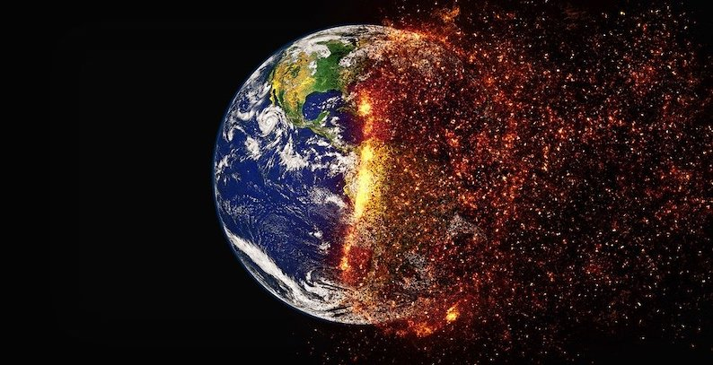

The idea for this website arose from a sense
of powerlessness in the face of the developing crisis of Climate
Change. The impact of any actions we can take individually seems
so small in comparison to the magnitude of the problem that it
feels entirely hopeless. Reflecting on how we might have a
larger impact, it struck me that the key lies with the young.
They will inherit the mess we have created by our
over-exploitation of the planet, and they need to be prepared to
live life differently - to forego a lot of the overindulgence
which has brought us to where we are now. Will they be prepared
to do this? To live without the cheap flights, extravagant diet
and throw-away culture which has increasingly characterised the
past 50 years?
It is more likely that the coming generations will be prepared
to make these sacrifices if they have a reverence for the
natural world. But here we hit the problem that many youngsters
in the UK see less of Nature than did earlier generations. We
are more urban nowadays, and spend more and more time living in
the virtual world created by the internet. Here, then, is an
opportunity for those of us who are retired. Many of us will
have grandchildren, along with the time and resources to
introduce them to Nature. Did you ever wish you could detach
your grandchildren from the TV, smartphone or games box and get
them doing something more meaningful? The aim of this collection
of activities is to help you to do so.
My hope is that many people will contribute their ideas and
expertise to enlarge the collection. Please contact me at Trevor Ponman
if you have an idea for such a contribution.